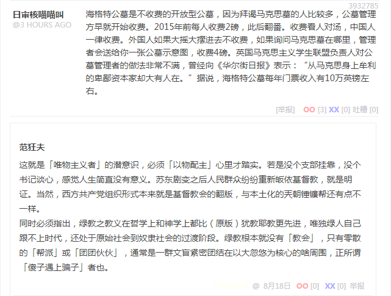

段子 3932785
海格特公墓是不收费的开放型公墓，因为拜谒马克思墓的人比较多，公墓管理方早就开始收费。2015年前每人收费2磅，此后翻番。收费看人对汤，中国人一律收费。外国人如果大摇大摆进去不收费，如果询问马克思墓在哪里，管理者会送给你一张公墓示意图，收费4磅。英国马克思主义学生联盟负责人对公墓管理者的做法非常不满，曾经向《华尔街日报》表示：“从马克思身上牟利的卑鄙资本家却大有人在。”据说，海格特公墓每年门票收入有10万英镑左右。
这就是「唯物主义者」的潜意识，必须「以物配主」心里才踏实。若是没个支部挂靠，没个书记谈心，感觉人生简直没有意义。苏东剧变之后人民群众纷纷重新皈依基督教，就是明证。当然，西方共产党组织形式本来就是基督教会的翻版，与本土化的兲朝锤镰帮还有点不一样。
同时必须指出，绿教之教义在哲学上和神学上都比（原版）犹教耶教更先进，唯独绿人自己跟不上时代，还处于原始社会到奴隶社会的过渡阶段。绿教根本就没有「教会」，只有零散的「帮派」或「团团伙伙」，通常是一群文盲紧密团结在以大忽悠为核心的啥周围，正所谓「傻子遇上骗子」者也。
补充
相关「形而上者谓之道」内容已经反复说过多遍了，通常「政治敏感」「亦当删去」「仅自己可见」，这里不再重复，仅列出链接（不全）。
知乎问答〔№003〕儒学为何没发展成为像基督教那样的宗教，并形成一种独立于王权的势力？
知乎问答〔№011〕盲人摸象是历史唯物主义吗？
知乎问答〔№017〕中国真的在文化、数学、医学上都曾经领先世界几百年吗？
知乎问答〔№035〕如何系统性地学习柏拉图的思想？
知乎评论〔＃025〕唯心主义的产物能在唯物主义世界走多远?
《范版西幻设定集》注释〔四〕
《范版西幻设定集》注释〔六〕
《范版西幻设定集》注释〔七〕